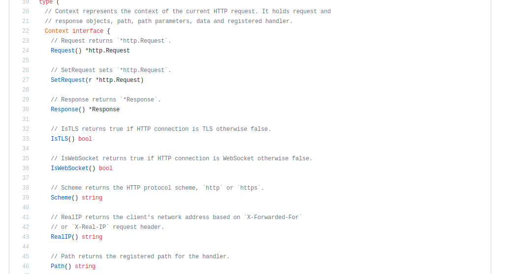

Boas Práticas & Clean Code
com GoBianca Rosa
tech lead @ stone
- Python & Go
- Docker & Kubernetes & Cloud
- Qualidade & Automação
- PythOnRio / Pyladies / WWG RJ
be a clean gopher


- Nomenclaturas e convenções
- Conceitos de Clean Code
- O que não fazer
- Referências
Nomenclaturas e convenções
There are only two hard things in Computer Science: cache invalidation and naming things.
Phil Karlton
Nomes de variáveis
- Lower case, se necessário utilize mixedCaps.
- Regra básica: crescem e se tornam mais descritivos de acordo com o tamanho do escopo
- Pequenos e abreviados quando usados em blocos de escopo menores(1-2 letras)
- Podem ser mais descritivas em blocos de escopo maiores
Nomes de variáveis
Nomes de variáveis
Nomes de pacotes
- Lower case, uma única palavra: sem underscore ou mixedCaps.
- Não se importe com colisões de nome num primeiro momento.
- Use nomes de pacotes que vão fazer sentido na chamada da sua função.
Nomes de pacotes
import "io"
import "bufio"
import "ring"
ring := ring.New()
var reader *io.Reader
var bufreader *bufio.Reader
Nomes de pacotes
Nomes de funções
Seja descritivo e conciso.
object.Owner()object.SetOwner(owner)Nomes de interfaces
Tente utilizar sufixos -er (exemplo: Reader, Writter, Formatter, Notifier)
Comentários
Code Review Comments - Package Comments
Evite escrever comentários para explicar lógica e código. Ao invés disso, invista em nomes de funções que façam sentido.
A grande utilidade de comentários é a geração de doc automáticas através do go doc.
Comentários
Comentários
Use as ferramentas da linguagem!
go fmt
Não tem nenhum motivo pra não usar a formatação padrão do Go.
Conceitos de Clean Code
Regra do Escoteiro
The Boy Scout Rule
func returnUsername(userId int) string {
if userId == 1 {
return "Maria"
} else if userId == 2 {
return "João"
} else if userId == 3 {
return "Joaquim"
} else if userId == 4 {
return "Ana Clara"
}
return "Não identificado"
}var users map[int]string
func init() {
users = map[int]string{
1: "Maria",
2: "João",
3: "Joaquim",
4: "Ana Clara",
}
}
func name(userID int) string {
name, ok := users[userID]
if ok == false {
return "Não identificado"
}
return name
}Princípio da Responsabilidade Única (SRP)
type fox struct{}
func (f *fox) Say() {
fmt.Println("Ring-ding-ding-ding-dingeringeding!")
}type fox struct{}
func (f *fox) Say() {
fmt.Println("Ring-ding-ding-ding-dingeringeding!")
}
func (f *fox) Meow() {
fmt.Println("Meow-meow-meow-meow-meow-meow")
}type fox struct{}
func (f *fox) Say() {
fmt.Println("Ring-ding-ding-ding-dingeringeding!")
}
type cat struct{}
func (c *cat) Meow() {
fmt.Println("Meow-meow-meow-meow-meow-meow")
}DRY
Don't Repeat Yourself
A menos que você esteja criando complexidade desnecessária
SEMPRE cheque seus erros
func converte(s string) int {
n, _ := strconv.Atoi(s)
return n
}func converte(s string) (int, error) {
n, err := strconv.Atoi(s)
return n, err
}func converte(s string) (int) {
n, err := strconv.Atoi(s)
if err != nil {
n = 0
//log error
}
return n
}O que não fazer

func hasPermission(roles []Role, statusFlows []StatusFlow, currentStatus, newStatus string) bool {
for _, role := range roles {
for _, statusFlow := range statusFlows {
if strings.ToLower(role.Name) == strings.ToLower(statusFlow.Role) {
if len(statusFlow.Flows) == 0 {
return true
}
for _, permission := range statusFlow.Flows {
if permission.From == currentStatus {
for _, newStatuses := range permission.To {
if newStatuses == newStatus {
return true
}
}
}
}
}
}
}
return false
}
Mas como resolver?

func (u *User) HasPermission(fromStatus, toStatus string) bool {
for _, role := range u.roles {
return role.hasPermission(fromStatus, toStatus)
}
return false
}func (r *Role) hasPermission(fromStatus, toStatus string) bool {
flows := Flows()
flow := matchedFlow(flows, r.Name)
if flow != nil {
return true
}
return flow.IsTransitionAllowed(fromStatus, toStatus)
}func matchedFlow(statusFlows []StatusFlow, name string) *StatusFlow {
for _, statusFlow := range statusFlows {
if strings.EqualFold(name, statusFlow.Role) {
return &statusFlow
}
}
return nil
}
func (f *StatusFlow) IsTransitionAllowed(from, to string) bool {
if len(f.Flows) == 0 {
return true
}
permission := f.PermissionForTransition(from)
for _, new := range permission.To {
if new == to {
return true
}
}
return false
}func (f *StatusFlow) PermissionForTransition(name string) *Permission {
for _, permission := range f.Flows {
if permission.From == name {
return &permission
}
}
return nil
}Referências
twitter: @__biancarosa
slides: biancarosa.com.br/slides/go-clean-code-2.html
tks :)